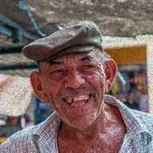

Ruis

Bedekt de laag met fijne korrel, één korrel per pixel, die elk frame verandert. Monochroom maakt de korrel grijs, Uitersten maakt elke korrel helemaal licht of donker en Bevriezen zet het patroon stil.
Instellingen
| Instelling | Type | Bereik | Standaard |
|---|---|---|---|
| Sterkte | Getal | 0 tot 1 | 0.25 |
| Monochroom | Aan of uit | – | Uit |
| Bevriezen | Aan of uit | – | Uit |
| Uitersten | Aan of uit | – | Uit |
| Verschuiving | Punt (X, Y) | -5000 px tot 5000 px | 0 px, 0 px |
| Doorschieten | Getal | 0.5 tot 2 | 2 |